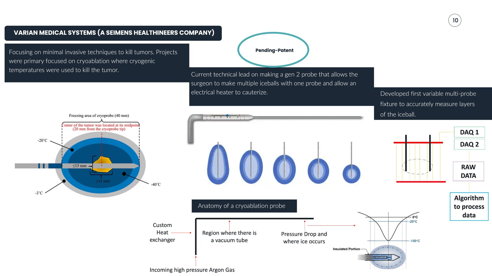
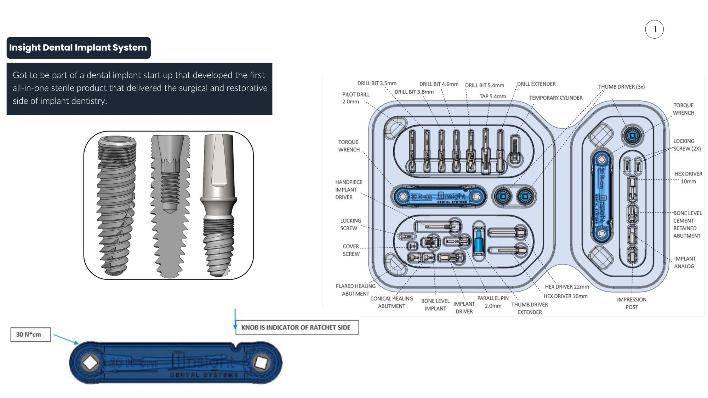

Bryant Phamvu
Medical Device Engineer
Mechanical engineer with 10+ years of experience developing complex medical devices across orthopedics, cryoablation, robotics, dental systems, and surgical instrumentation. Experienced in taking devices from concept through validation and manufacturing.
Development Process
A proven approach to medical device development — from unmet clinical need to production.
Requirements
Define clinical needs and translate them into engineering specifications through stakeholder alignment and market research.
Feasibility
Prototype rapidly, run characterization studies, and evaluate manufacturability through DFM analysis.
Verification & Validation
Execute test protocols, document results, and confirm the design meets all safety and performance requirements.
Design Transfer
Finalize manufacturing processes, validate production tooling, and complete regulatory documentation.
Production
Launch to market, monitor field performance, and incorporate customer feedback for continuous improvement.
Portfolio
Engineering case studies across medical device domains

Challenge
Develop a minimally invasive cryogenic delivery system capable of controlled thermal ablation of tumors, replacing helium-based systems with a more accessible high-pressure Argon architecture.
Bryant's Role
Technical mechanical lead responsible for the mechanical design and DHF ownership of the Gen 2 cryoablation probe — the first helium-free variable probe cryogenic ablation device to market.
Engineering Highlights
- Gen 2 probe enabling multiple iceballs from a single probe with electrical heater for cauterization
- First variable multi-probe fixture for accurate iceball layer measurement
- DAQ-based data acquisition with custom processing algorithm
- Custom heat exchanger design for cryogenic thermal management
- Systems operating at –160°C with optimized heat transfer under extreme thermal gradients
Outcome
Delivered the first helium-free variable probe cryoablation device platform to market. Designed automated test hardware/software enabling parallel multi-device testing, reducing test time by 15% and increasing accuracy by 5%.
| Parameter | Specification |
|---|---|
| Freezing Area | 40mm |
| Lethal Zone | -20°C to -40°C |
| Outer Boundary | -3°C |
| Kill Radius | ≤15mm |
| Gas Supply | High-pressure Argon |
| Tumor Center | 20mm from cryoprobe tip (midpoint) |
Challenge
Develop external fixation systems for foot and ankle correction that improve patient comfort and simplify surgeon workflow, including the first fixator designed with an open posterior ring.
Bryant's Role
Senior R&D Mechanical Engineer owning full lifecycle development of Class II orthopedic external fixation systems, from concept through production transfer.
Engineering Highlights
- First open-back fixator design for patient comfort
- Combined circular fixator with tibial nail using rack & pinion autonomous positioning
- Robotic struts and sensors integration (ongoing)
- Multi-pin clamp design (consulting project)
- 20mm rail system with precision measurement markings
- Lead-screw, hinge, and ball-and-socket mechanisms reducing OR time
Outcome
Five issued patents covering external fixation innovations. The open-back design improved patient comfort during treatment, while mechanism designs simplified surgeon workflow and reduced operating room time.
| Component | Specification |
|---|---|
| Half-Pin Material | Stainless Steel 316 LVM |
| Half-Pin Diameter | 3mm |
| Half-Pin Type | Self-tapping / Self-drilling |
| Rail Length | 20mm |
| Hub Attachment | Single-tooth locking design |
Challenge
Create an autonomous endoscopic system for trauma intubation and colonoscopy applications, integrating robotic multi-axis control with patient safety constraints.
Bryant's Role
Lead mechanical engineer responsible for the robotic autonomous endoscope system design, integrating motors, leadscrews, couplings, limit switches, and multi-axis sensing.
Engineering Highlights
- Autonomous scope for endotracheal tube delivery (trauma application)
- Robotic mechanical system replicating modern-day colonoscope movements
- Flexible bending section reducing joint stress and improving articulation reliability
- Custom heat-sink solutions protecting embedded sensors for patient safety
- Final enclosed unit with display screen and articulating arm
Outcome
Patented system for automated endoscopic navigation and control. Portable concept explored but shelved due to sterility constraints; final design achieved enclosed clinical-grade form factor.
| Component | Specification |
|---|---|
| Limit Switch | Omron D2F |
| Z-Axis Switches | 3x (fixed) |
| X-Y Axis Switches | 6x (on X-Y motors) |
| Chassis Dimensions | 5.72" × 5.45" |
| Clearance | 0.256" |

Challenge
Design the first all-in-one sterile dental implant product that delivers both surgical and restorative components in a single kit, reducing procedure time and simplifying inventory.
Bryant's Role
R&D Mechanical Engineer contributing to the design of a Class II dental implant system, responsible for kit design, component specification, and torque-limiting mechanisms.
Engineering Highlights
- First all-in-one sterile surgical + restorative implant kit
- Complete kit design with 20+ precision components
- Torque wrench rated at 30 N·cm with ratchet indicator
- Guided surgical kit reducing required drill bits per procedure by 50%
Outcome
Delivered a Class II dental implant system that reduced surgical time by 10 minutes and manufacturing cost by 3%. Supported full DHF including feasibility studies, V&V protocols, dFMEA, and traceability.
| Component | Specification |
|---|---|
| Pilot Drill | 2.0mm |
| Drill Bits | 3.5mm, 3.8mm, 4.6mm, 5.4mm |
| Tap | 5.4mm |
| Hex Drivers | 10mm, 16mm, 22mm |
| Torque Wrench | 30 N·cm |
| Locking Screws | 2x |
| Thumb Drivers | 3x |
| Parallel Pin | 2.0mm |
Patents
6 issued · 7 pending
External Fixation for the Correction of Bone Deformity and Trauma
US10413328B1 Orthopedics IssuedOrthopedic Strut with Lockable Swivel Hinge
US2018368888A1 Orthopedics IssuedOrthopedic Strut with Multiple Attachment Clamps
US20200054360A1 Orthopedics IssuedSuper Wing Nut and Bolt
US20190262038A1 Orthopedics IssuedWire Tensioner with Swivel Hinge
US20190223933A1 Orthopedics IssuedSystem and Method for Automated Navigation and Control of an Endoscopic Surgical Device
US2022217970863 Surgical RoboticsDental Implant Serration & Abutment Locking Feature
Dental ImplantsBone Biopsy Extraction Tool for Hard Bone
OrthopedicsCryoablation Probe with Ribbed Heat-Transfer Geometry
CryoablationCoiled Heater Assembly for Rapid Thermal Cycling
CryoablationVariable Probe — General
CryoablationVariable Probe — Automated Settings Sensor
CryoablationVariable Probe — Magnet Actuation
CryoablationExperience
Professional background in medical device engineering
Professional Experience
- Technical mechanical lead in mechanical design and DHF ownership for the first helium-free variable probe cryogenic ablation device out in the market using high-pressure Argon, custom heat exchangers, and thermal management components.
- Engineered systems operating at –160°C, optimizing heat transfer and structural integrity under extreme thermal gradients.
- Designed automated test hardware/software enabling parallel multi-device testing; reduced test time by 15% and increased accuracy by 5%.
- Technical mechanical lead in the design of a Powered Bone Biopsy system and launched to market. System is known as Omnibone Bone Biopsy Kit.
- Developed electromechanical prototypes and fixtures supporting feasibility, verification, and reliability testing.
- Applied gas flow thermal analysis, and DFM/DFA to improve performance and manufacturability.
- Mentored junior engineers for design and V&V testing.
- Lead mechanical design for a robotic autonomous endoscope system integrating motors, leadscrews, couplings, limit switches, and multi-axis sensing.
- Developed a robotic mechanical system to replicate modern-day colonoscope movements.
- Designed a flexible bending section reducing joint stress and improving articulation reliability.
- Developed custom heat-sink solutions to protect embedded sensors and ensure patient safety.
- Executed feasibility testing, prototyping, and early-stage system integration.
- Managed multiple production processes, improving scrap rate by 3% and lead time by 6%.
- Designed tooling, fixtures, and jigs supporting precision machining and assembly. Redesigned fixtures to handle multiple jobs, decreasing machine set-up times.
- Implemented lean manufacturing initiatives including 5S and process capability improvements. Resulted in a 4% decrease in machine set-up times.
- Owned full lifecycle development of Class II orthopedic external fixation systems, including the first open posterior fixation ring improving patient comfort.
- Designed mechanisms (lead-screw, hinge, ball-and-socket) reducing OR time and simplifying surgeon workflow.
- Prototyped electromechanical systems integrating temperature, strain, and pressure sensors.
- Mentored junior engineers and supported V&V testing, usability studies, and regulatory documentation.
- Contributed to the design of a Class II all-in-one sterile dental implant system, reducing surgical time by 10 minutes and manufacturing cost by 3%.
- Developed a guided surgical kit reducing required drill bits per procedure by 50%.
- Supported DHF creation including feasibility studies, V&V protocols, dFMEA, and traceability.
- Collaborated with cross-functional teams to refine mechanical interfaces and torque-limiting mechanisms.
Education
B.S. Mechanical Engineering
University of Texas at San Antonio, 2014Core Skills
Mechanical Engineering
SolidWorks, GD&T, tolerance analysis, FEA, precision mechanisms, fixture & tooling design
Electromechanical Systems
Motors, leadscrews, robotics, sensors, motion systems, EPROM, RFID
Thermal & Fluids
Cryogenic systems, heat exchangers, heat sinks, high-pressure gas flow
Medical Device Regulatory
ISO 13485, 21 CFR 820, DHF, dFMEA, risk management, Class II devices
Manufacturing & Validation
Machining, EDM, laser-cutting, grinding, 3D printing, DFM/DFA, V&V, root-cause analysis
Engineering Software
MATLAB, LabVIEW, MS Office, Lumafield CT, data acquisition systems
Beyond Engineering
Connect with Bryant
Open to opportunities in medical device engineering and advanced hardware systems.